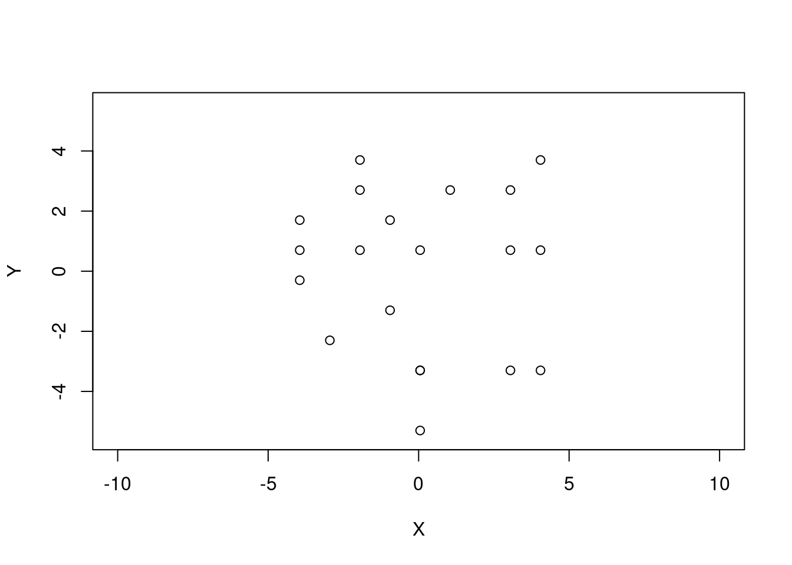
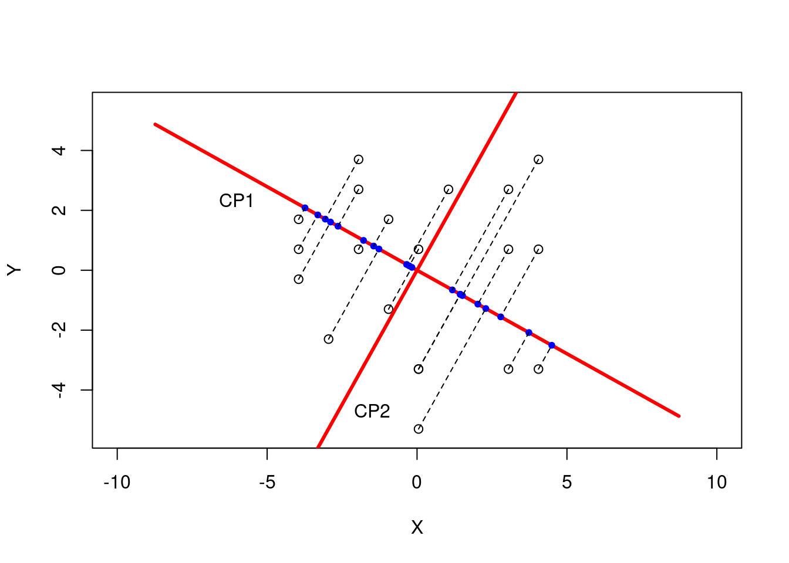
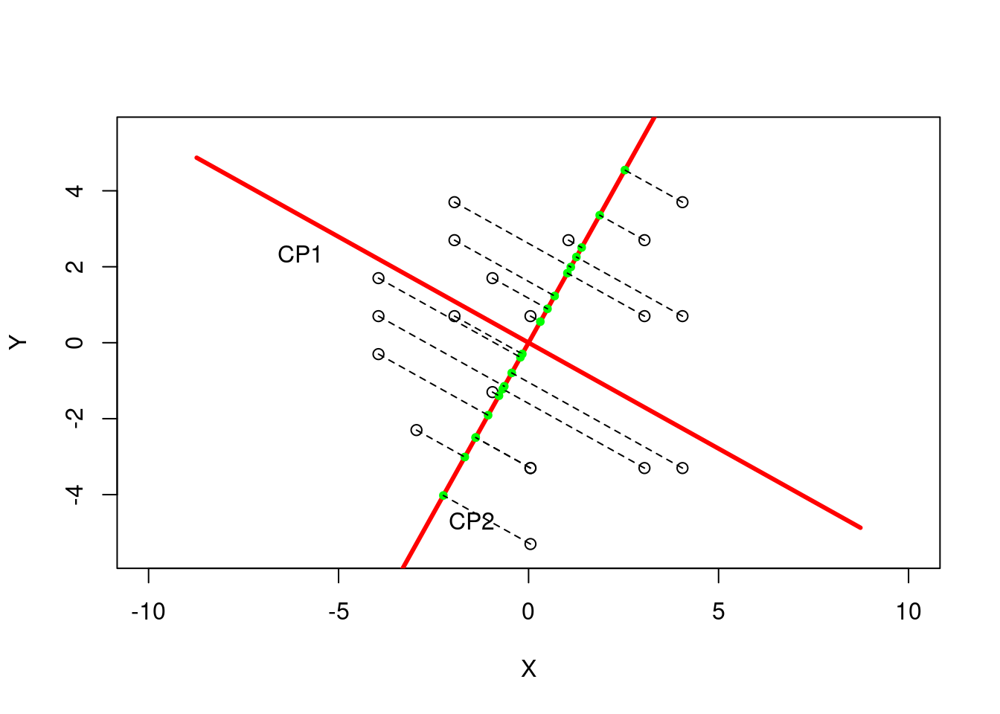
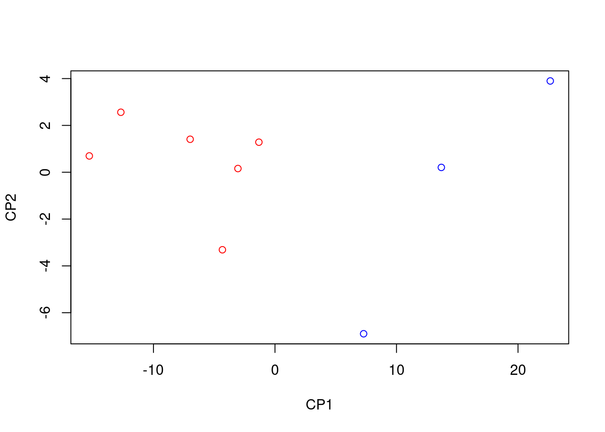
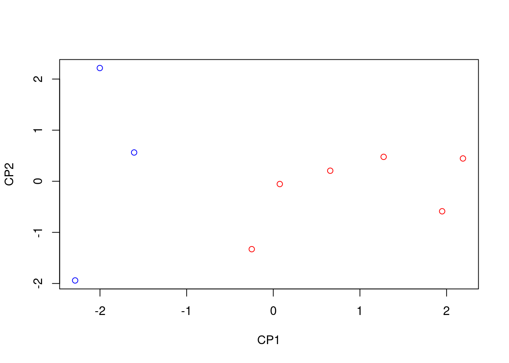
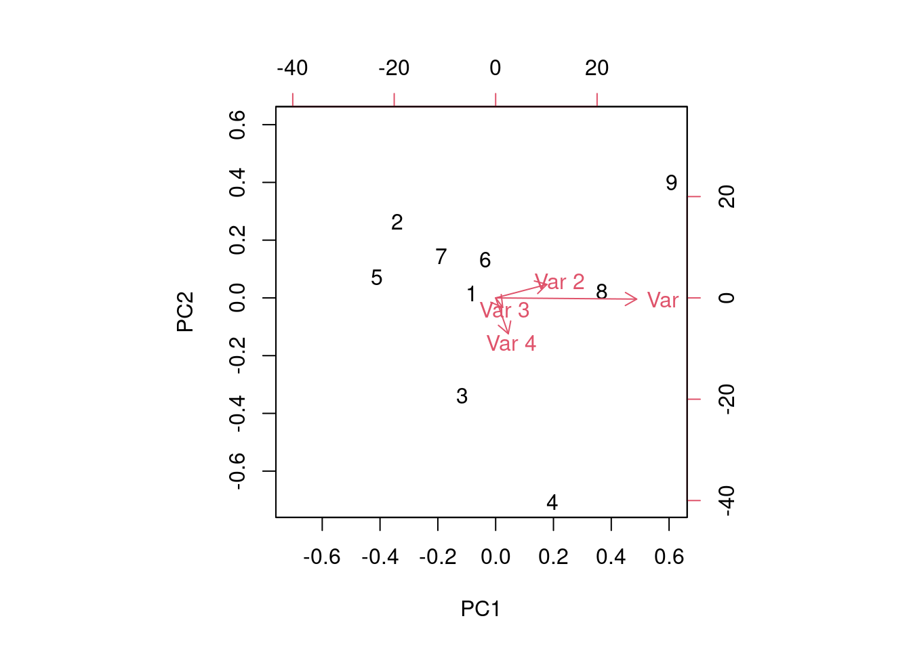

Tema 12 Anàlisi de components principals
El problema central de l’anàlisi de dades és la reducció de la dimensionalitat.
És a dir, si és possible descriure amb precisió els valors de les \(p\) variables per un petit subconjunt \(r <p\) d’aquestes variables amb una pèrdua mínima d’informació.
Aquest és l’objectiu de l’anàlisi de components principals: donades \(n\) observacions de \(p\) variables, (taula de dades) s’analitza si és possible representar aquesta informació amb menys variables.
12.1 Introducció
Dit de forma més explícita, volem transformar les variables de la nostra taula de dades en unes noves variables anomenades components principals que siguin incorrelacionades entre sí i que siguin combinació lineal de les variables originals.
Si el nombre de variables noves és més petit que les variables originals, hi haurà una pèrdua d’informació.
Volem que aquesta pèrdua sigui mínima en el sentit de que les components principals heretin la màxima variabilitat de les variables originals.
12.2 Components principals
Anomenarem \(X_1,\ldots,X_p\) a les nostres variables originals i \(CP_1,\ldots,CP_r\) a les variables components principals on \(r\leq p\).
Volem calcular una matriu \({\Lambda}\) tal que: \[ \mathbf{CP}={\Lambda}\mathbf{X}, \] on \(\mathbf{CP}=(CP_1,\ldots,CP_r)^\top\), \(\mathbf{X}=(X_1,\ldots,X_p)^\top\) i \[ {\Lambda}=\begin{pmatrix} \alpha_{11}&\cdots & \alpha_{1p}\\ \alpha_{21}&\cdots & \alpha_{2p}\\ \cdots & \cdots & \cdots \\ \alpha_{r1}&\cdots & \alpha_{rp} \end{pmatrix}. \]
Escrit en components: \[\begin{eqnarray*} CP_1 &=& \alpha_{11} X_1+\cdots + \alpha_{1p} X_p, \\ CP_2 &=& \alpha_{21} X_1+\cdots + \alpha_{2p} X_p, \\ \vdots && \vdots \\ CP_r &=& \alpha_{11} X_1+\cdots + \alpha_{rp} X_p. \end{eqnarray*}\]
En la pràctica, sigui \(\mathbf{X}\) la nostra matriu \(n\times p\) que representa la taula de dades original on tenim \(n\) individus i \(p\) variables que suposarem centrada. O sigui, les mitjanes de les columnes de \(\mathbf{X}\) són nul·les.
Volem obtenir una nova matriu \(\mathbf{Y}\) \(n\times r\) corresponent a les components principals tal que: \(\mathbf{Y}=\mathbf{X}\cdot \Lambda^\top.\)
Escrit en components: \[ y_{ki}=x_{k1} \alpha_{i1}+\cdots +x_{kp}\alpha_{ip},\mbox{ per } k=1,\ldots,n,i=1,\ldots, r. \] Ens adonem que la matriu \(\mathbf{Y}\) també serà centrada.
12.3 Interpretació geomètrica
Suposem que \(p=2\) i que el nostre ``núvol’’ de punts de la nostra taula de dades és el que mostra la figura:

A continuació mostram les dues components principals. O sigui, les direccions on les projeccions de les dades tenen màxima variabilitat:
Si projectam en la direcció de la primera component, obtendrem les projeccions següents (punts blaus):

Això significa que la variància dels punts blaus és màxima en el sentit de que si haguéssim escollit una altra direcció o una altra recta i haguéssim projectat sobre aquesta segona recta, la variància de les projeccions hagués estar menor.
Els punts blaus representen les coordenades que tenen els punts de la nostra taula de dades si haguéssim agafat com eix d’abscisses, l’eix de la primera component \(CP_1\).
Si projectam en la direcció de la segona component, obtendrem les projeccions següents (punts verds):

12.4 Components principals
Condicions han de verificar les components principals:
Han d’esser incorrelades. O sigui, \(r_{CP_i,CP_j}=0\) o si \(\mathbf{y}_i\) i \(\mathbf{y_j}\) són les columnes \(i\) i \(j\) de la matriu \(\mathbf{Y}\), \(r_{\mathbf{y}_i,\mathbf{y}_j}=0\). Dit en altres paraules, la matriu de covariàncies o de correlacions de la taula de dades \(\mathbf{Y}\) serà diagonal.
Les variàncies de les components principals han de decréixer. O sigui, \[ \mbox{var}(CP_1)\geq \mbox{var}(CP_2)\cdots \geq \mbox{var}(CP_p). \] D’aquesta forma, la component principal \(CP_1\) serà la que tengui més variabilitat de totes i per tant, la més important, \(CP_2\), la segona més important i així successivament.
12.5 ACP sobre la matriu de covariàncies
Considerem \(\mathbf{X}\) \(n\times p\) la nostre matriu de dades que suposarem centrada on tenim \(n\) individus i \(p\) variables. Si no ho fos, l’haurem de centrar.
Sigui \(\mathbf{S}\) \(p\times p\) la matriu de covariàncies de \(\mathbf{X}\).
Recordem que \(\mathbf{S}\) es calcula com: \[ \mathbf{S}=\frac{1}{n}\mathbf{X}^\top\cdot\mathbf{X}. \]
Siguin \(\lambda_1 \geq \lambda_2 \geq \cdots \geq \lambda_p\) els valors propis de la matriu \(\mathbf{S}\) en ordre creixent.
Siguin \(\mathbf{v}_1,\mathbf{v}_2,\ldots,\mathbf{v}_p\) els corresponents vectors propis que suposarem ortogonals i normalitzats. Això és, suposarem que són perpendiculars dos a dos i tenen norma euclídea unitat.
Sigui \(\mathbf{V}\) la matriu de vectors propis que té els vectors anteriors per columnes.
Aleshores la matriu \(\Lambda\) és la transposada de la matriu \(\mathbf{V}\): \[ \Lambda=\mathbf{V}^\top. \]
Exemple 12.1 Considerem la següent matriu de dades:
\[ \mathbf{X}= \left(\begin{matrix}1&-1&3 \\1&0&3 \\2&3&0 \\3&0&1 \\\end{matrix}\right). \] Com que la matriu no està centrada, primer la centram:
\[ \tilde{\mathbf{X}} = \mathbf{H}_4\mathbf{X} = \left(\begin{matrix}0.75&-0.25&-0.25&-0.25 \\-0.25&0.75&-0.25&-0.25 \\-0.25&-0.25&0.75&-0.25 \\-0.25&-0.25&-0.25&0.75 \\\end{matrix}\right)\cdot \left(\begin{matrix}1&-1&3 \\1&0&3 \\2&3&0 \\3&0&1 \\\end{matrix}\right)= \left(\begin{matrix}-0.75&-1.5&1.25 \\-0.75&-0.5&1.25 \\0.25&2.5&-1.75 \\1.25&-0.5&-0.75 \\\end{matrix}\right). \] La matriu de covariàncies serà:
\[ \mathbf{S}=\frac{1}{4}\tilde{\mathbf{X}}^\top\tilde{\mathbf{X}}= \left(\begin{matrix}0.6875&0.375&-0.8125 \\0.375&2.25&-1.625 \\-0.8125&-1.625&1.6875 \\\end{matrix}\right). \] Els valors propis de la matriu de covariàncies anterior són: \[ \left(\begin{matrix}3.8295618494008&0.77436221933625&0.0210759312629551 \\\end{matrix}\right). \] Els corresponents vectors propis (per columnes) associats als vectors propis anteriors són: \[ \left(\begin{matrix}-0.252678042345583&0.749595621854402&0.611768101990546 \\-0.722287901642562&-0.566841264049372&0.396221110633566 \\0.643781014054616&-0.341756324107722&0.684652189710358 \\\end{matrix}\right). \] Ens adonem que els vectors anteriors són ortogonals i estan normalitzats.
Així la matriu que ens canviarà de variables originals a components principals serà la transposada dels vectors propis: \[ \Lambda= \left(\begin{matrix}-0.252678042345583&-0.722287901642562&0.643781014054616 \\0.749595621854402&-0.566841264049372&-0.341756324107722 \\0.611768101990546&0.396221110633566&0.684652189710358 \\\end{matrix}\right) \] Per tant, la matriu de dades en les noves variables serà:
\[ \mathbf{Y}=\tilde{\mathbf{X}}\Lambda^\top = \tilde{\mathbf{X}}\mathbf{V}= \left(\begin{matrix}2.0776666517913&-0.139130225451397&-0.19734250530531 \\1.35537875014874&-0.705971489500768&0.198878605328256 \\-2.99550603928838&-0.631630687471315&-0.0546465299115764 \\-0.43753936265166&1.47673240242348&0.0531104298886311 \\\end{matrix}\right). \]
Si calculam la matriu de covariàncies de les components principals val: \[ \mathbf{S}_{CP}= \left(\begin{matrix}3.829562&0&0 \\0&0.774362&0 \\0&0&0.021076 \\\end{matrix}\right). \] Ens adonam que és diagonal, per tant, les covariàncies entre variables diferents són nul·les i en la diagonal hi ha les variàncies de les components principals que estan en ordre creixent. Us sonen aquests valors?
Efectivament, són els valors propis de la matriu de covariàncies de les variables originals \(\mathbf{S}\).
Comprovem que la variabilitat s’ha conservat.
La variabilitat de les variables originals serà la suma dels valors de la diagonal de la matriu \(\mathbf{S}\): \[ 0.688 + 2.25 + 1.688 = 4.625. \]
La variabilitat de les components principals serà la suma dels valors de la diagonal de la matriu \(\mathbf{S}_{CP}\): \[ 3.83 + 0.774 + 0.021 = 4.625. \] Podem observar que les dues variabilitats coincideixen.
La primera component principal (1a. columna de la matriu \(\mathbf{CP}\)) hereta el \(\frac{3.83}{4.625}\cdot 100\% = 82.801\%\) de la variabilitat total.
Les dues primeres components principals hereten el \(\frac{3.83 + 0.774}{4.625}\cdot 100\% = 99.544\%\) de la variabilitat total.
Exemple 12.2 Facem un exemple més complet. La taula següent ens dóna l’edat en dies (\(x_1\)), l’alçada al néixer en cm. (\(x_2\)), el seu pes en kg. en néixer (\(x_3\)) i l’augment en tant per cent del seu pes actual respecte el seu pes en néixer (\(x_4\)) de \(9\) nens i nenes recent nats.
| \(x_1\) | \(x_2\) | \(x_3\) | \(s_4\) | \(Sexe\) |
|---|---|---|---|---|
| 78 | 48.2 | 2.75 | 29.5 | Nina |
| 69 | 45.5 | 2.15 | 26.3 | Nina |
| 77 | 46.3 | 4.41 | 32.2 | Nina |
| 88 | 49 | 5.52 | 36.5 | Nin |
| 67 | 43 | 3.21 | 27.2 | Nina |
| 80 | 48 | 4.32 | 27.7 | Nina |
| 74 | 48 | 2.31 | 28.3 | Nina |
| 94 | 53 | 4.3 | 30.3 | Nin |
| 102 | 58 | 3.71 | 28.7 | Nin |
Hem afegit una variable més (sexe de l’infant). Ens demanem si aquestes \(4\) variables són capaces d’explicar o de predir la variable anterior.
La matriu de dades centrada seria:
\[ \tilde{\mathbf{X}}= \left(\begin{matrix}-3&-0.577778&-0.881111&-0.055556 \\-12&-3.277778&-1.481111&-3.255556 \\-4&-2.477778&0.778889&2.644444 \\7&0.222222&1.888889&6.944444 \\-14&-5.777778&-0.421111&-2.355556 \\-1&-0.777778&0.688889&-1.855556 \\-7&-0.777778&-1.321111&-1.255556 \\13&4.222222&0.668889&0.744444 \\21&9.222222&0.078889&-1.555556 \\\end{matrix}\right). \]
La matriu de covariàncies serà: \[ \mathbf{S}=\frac{1}{9}\tilde{\mathbf{X}}^\top\tilde{\mathbf{X}}= \left(\begin{matrix}119.333333&43.133333&6.147778&10.877778 \\43.133333&17.19284&1.147802&1.169012 \\6.147778&1.147802&1.11061&2.421716 \\10.877778&1.169012&2.421716&8.818025 \\\end{matrix}\right). \]
Els valors propis de la matriu de covariàncies anterior són: \[ \left(\begin{matrix}136.296149&9.390122&0.721969&0.046567 \\\end{matrix}\right). \] Els corresponents vectors propis (per columnes) associats als vectors propis anteriors són: \[ \left(\begin{matrix}0.935483&-0.030824&0.249655&0.248183 \\0.340061&0.341857&-0.664518&-0.570883 \\0.046932&-0.241021&0.572236&-0.782465 \\0.083835&-0.907795&-0.410651&-0.015664 \\\end{matrix}\right). \] Ens adonem que els vectors anteriors són ortogonals i estan normalitzats.
Així la matriu que ens canviarà de variables originals a components principals serà la transposada dels vectors propis: \[ \Lambda= \left(\begin{matrix}0.935483&0.340061&0.046932&0.083835 \\-0.030824&0.341857&-0.241021&-0.907795 \\0.249655&-0.664518&0.572236&-0.410651 \\0.248183&-0.570883&-0.782465&-0.015664 \\\end{matrix}\right). \]
Les expressions de les components principals en funció de les variables originals són: \[\begin{align*} CP_1 &= 0.935X_1 +0.34X_2 +0.047X_3 +0.084X_4 \\ CP_2 &= -0.031X_1 +0.342X_2 -0.241X_3 -0.908X_4 \\ CP_3 &= 0.25X_1 -0.665X_2 +0.572X_3 -0.411X_4 \\ CP_4 &= 0.248X_1 -0.571X_2 -0.782X_3 -0.016X_4 \end{align*}\]
Per tant, la matriu de dades en les noves variables serà:
\[ \mathbf{Y}=\tilde{\mathbf{X}}\Lambda^\top = \tilde{\mathbf{X}}\mathbf{V}= \left(\begin{matrix}-3.048937&0.157754&-0.84641&0.275605 \\-12.682877&2.561714&-0.328361&0.10295 \\-4.326273&-3.312093&0.007676&-0.229086 \\7.294786&-6.899197&-0.170939&0.023647 \\-15.278794&0.696221&1.07061&0.190282 \\-1.323205&1.283363&1.423385&-0.314128 \\-6.980132&1.408083&-1.471127&-0.239868 \\13.690889&0.205664&0.516822&0.280936 \\22.654543&3.898489&-0.201655&-0.090337 \\\end{matrix}\right). \]
Si calculam la matriu de covariàncies de les components principals val: \[ \mathbf{S}_{CP}= \left(\begin{matrix}136.296149&0&0&0 \\0&9.390122&0&0 \\0&0&0.721969&0 \\0&0&0&0.046567 \\\end{matrix}\right). \]
Igual que passava en l’exemple anterior, és diagonal, com esperàvem i en la diagonal hi surten els valors propis de la matriu de covariàncies de les dades originals.
Comprovem que la variabilitat s’ha conservat.
La variabilitat de les variables originals serà la suma dels valors de la diagonal de la matriu \(\mathbf{S}\): \[ 119.333 + 17.193 + 1.111 + 8.818 = 146.455. \] La variabilitat de les components principals serà la suma dels valors de la diagonal de la matriu \(\mathbf{S}_{CP}\): \[ 136.296 + 9.39 + 0.722 +0.047= 146.455. \] Podem observar que les dues variabilitats coincideixen.
La primera component principal (1a. columna de la matriu \(\mathbf{CP}\)) hereta el \(\frac{136.296}{146.455}\cdot 100\% = 93.064\%\) de la variabilitat total.
Les dues primeres components principals hereten el \(\frac{136.296 + 9.39}{146.455}\cdot 100\% = 99.475\%\) de la variabilitat total.
Això ens fa pensar que si només tenim en compte les dues primeres components, podem fer un gràfic on hi estiguin representats tots els nens dibuixant de blau els nens i de vermell les nenes.
Comprovem que les dues primeres components separen bé els nens i les nens. Concloem que la nostra taula de dades ``explica’’ la variable sexe.

12.6 Propietats de l’ACP sobre la matriu de covariàncies
Recordem que la matriu \(\mathbf{S}\) és la matriu de covariàncies de les variables originals i \(\mathbf{S}_{CP}\) és la matriu de covariàncies de les components principals.
La diagonal de la matriu \(\mathbf{S}\) està formada per les variàncies de les variables originals \(s_i^2\), \(i=1,\ldots,p\).
Definim la variància total de la nostra taula de dades com la suma de les variàncies o la traça de la matriu \(\mathbf{S}\): \[ \mbox{Variància Total}=tr(\mathbf{S})=\sum_{i=1}^p s_i^2. \]
La variància de la \(i\)-èssima component principal és el valor propi \(i\)-èssim de la matriu de covariàncies \(\mathbf{S}\): \(\mbox{Var} (CP)_i =\lambda_i.\)
Es conserva la variància total. O sigui, la variància total de les variables originals i de les components principals és la mateixa: \[ \sum_{i=1}^p \mbox{var}(X_i) = \sum_{i=1}^p \mbox{var}(CP_i) =\sum_{i=1}^p\lambda_i. \]
Les components principals són incorrelades. O, dit, en altres paraules, la seva matriu de covariàncies és diagonal: \[ \mathbf{S}_{CP}=\left(\begin{array}{cccc} \lambda_1& 0 &\ldots & 0\\ 0& \lambda_{2}&\ldots & 0\\ \vdots & \vdots & & \vdots\\ 0 & 0&\ldots & \lambda_{p} \end{array} \right) \]
Donada una taula de dades, definim la variància generalitzada com el determinant de la matriu de covariàncies. Aleshores, la variància generalitzada de les variables originals i de les components principals coincideix: \[ \mbox{det}(\mathbf{S}) =\mbox{det}(\mathbf{S}_{CP}) =\lambda_1\cdots \lambda_p. \]
La proporció de variància explicada per la component \(j\)-èssima és: \(\frac{\lambda_j}{\sum_{i=1}^p\lambda_i}.\) Per tant, la variància explicada per les \(k\) primeres components val: \(\frac{\sum_{i=1}^k\lambda_j}{\sum_{i=1}^p\lambda_i}.\)
Sigui \(\mathbf{X}_i\) la \(i\)-èssima variable original. O sigui, la \(i\)-èssima columna de la matriu de dades \(\mathbf{X}\). Sigui \(\mathbf{CP}_j\) la \(j\)-èssima component principal. O sigui, la \(j\)-èssima columna de la matriu de dades \(\mathbf{CP}\). Aleshores la covariància entre les variables (columnes) \(\mathbf{X}_i\) i \(\mathbf{CP}_j\) val: \[ \mbox{cov}(\mathbf{X}_i,\mathbf{CP}_j)=\lambda_j u_{ji}, \] on \(u_{ji}\) és la \(i\)-èssima component del vector propi unitari \(\mathbf{u}_j\) corresponent al valor propi \(\lambda_j.\)
Seguint la mateixa notació anterior, la correlació entre \(\mathbf{X}_i\) i \(\mathbf{CP}_j\) val: \[ \mbox{cor}(\mathbf{X}_i,\mathbf{CP}_j)=\frac{\sqrt{\lambda_j}u_{ji}}{s_i}. \]
En general si definim la matriu \(\mathbf{S}_{X,CP}\) de components \(s_{ij}=\mbox{cov}(\mathbf{X}_i,\mathbf{CP}_j)\), podem escriure: \[ \mathbf{S}_{X,CP}= \mathbf{V}\mbox{diag}(\lambda_1,\ldots,\lambda_p), \] on \(\mathbf{V}\) és la matriu de vectors propis de la matriu de covariàncies \(\mathbf{S}.\)
En general si definim la matriu \(\mathbf{R}_{X,CP}\) de components \(r_{ij}=\mbox{cor}(\mathbf{X}_i,\mathbf{CP}_j)\), podem escriure: \[ \mathbf{R}_{X,CP}= \mathbf{V}\mbox{diag}(\sqrt{\lambda_1},\ldots,\sqrt{\lambda_p})\mbox{diag}\left(\frac{1}{s_1},\ldots,\frac{1}{s_p}\right), \] on \(s_i\) és la desviació típica de la variable original \(\mathbf{X}_i\).
La primera component principal seria la varietat lineal de dimensió \(1\) (una recta) que conserva la major variabilitat (anomenada inèrcia) del ``núvol’’ de punts.
De la mateixa manera, les dues primeres components principals serien la varietat lineal de dimensió \(2\) (pla) que conserva la major variabilitat (anomenada inèrcia) del ``núvol’’ de punts.
En general, les \(k\) primeres components principals serien la varietat lineal de dimensió \(k\) que conserva la major variabilitat (anomenada inèrcia) del ``núvol’’ de punts.
Exemple 12.3 Comprovem la relació anterior entre les variables originals i les components principals en l’exemple dels infants.
Recordem que la matriu centrada de dades era: \[ \tilde{\mathbf{X}}= \left(\begin{matrix}-3&-0.577778&-0.881111&-0.055556 \\-12&-3.277778&-1.481111&-3.255556 \\-4&-2.477778&0.778889&2.644444 \\7&0.222222&1.888889&6.944444 \\-14&-5.777778&-0.421111&-2.355556 \\-1&-0.777778&0.688889&-1.855556 \\-7&-0.777778&-1.321111&-1.255556 \\13&4.222222&0.668889&0.744444 \\21&9.222222&0.078889&-1.555556 \\\end{matrix}\right). \]
La matriu de components principals era: \[ {\mathbf{CP}}= \left(\begin{matrix}-3.048937&0.157754&-0.84641&0.275605 \\-12.682877&2.561714&-0.328361&0.10295 \\-4.326273&-3.312093&0.007676&-0.229086 \\7.294786&-6.899197&-0.170939&0.023647 \\-15.278794&0.696221&1.07061&0.190282 \\-1.323205&1.283363&1.423385&-0.314128 \\-6.980132&1.408083&-1.471127&-0.239868 \\13.690889&0.205664&0.516822&0.280936 \\22.654543&3.898489&-0.201655&-0.090337 \\\end{matrix}\right). \] La covariància entre les dues matrius anteriors val: \[ \mbox{cov}(\tilde{X},{\mathbf{CP}})= \left(\begin{matrix}127.502681&-0.289442&0.180243&0.011557 \\46.348967&3.210081&-0.479762&-0.026584 \\6.39661&-2.263218&0.413137&-0.036437 \\11.426424&-8.524309&-0.296477&-0.000729 \\\end{matrix}\right). \]
Si fem \(\mathbf{V}\cdot\mbox{diag}(\lambda_1,\ldots,\lambda_p)\) obtenim el mateix: \[\begin{align*} &\left(\begin{matrix}0.935483&-0.030824&0.249655&0.248183 \\0.340061&0.341857&-0.664518&-0.570883 \\0.046932&-0.241021&0.572236&-0.782465 \\0.083835&-0.907795&-0.410651&-0.015664 \\\end{matrix}\right) \cdot \\ & \left(\begin{matrix}136.296149&0&0&0 \\0&9.390122&0&0 \\0&0&0.721969&0 \\0&0&0&0.046567 \\\end{matrix}\right) = \mbox{cov}(\tilde{X},{\mathbf{CP}}) \end{align*}\]
La correlacions entre les dues matrius anteriors val: \[ \mbox{cor}(\tilde{X},{\mathbf{CP}})= \left(\begin{matrix}0.999762&-0.008647&0.019419&0.004903 \\0.957468&0.252643&-0.136173&-0.029711 \\0.519909&-0.700826&0.461375&-0.160222 \\0.329597&-0.936781&-0.117502&-0.001138 \\\end{matrix}\right). \]
Si fem \(\mathbf{V}\cdot\mbox{diag}(\sqrt{\lambda_1},\ldots,\sqrt{\lambda_p})\cdot \mbox{diag}\left(\frac{1}{s_1},\ldots,\frac{1}{s_p}\right)\) obtenim el mateix, o sigui el producte de les tres matrius següents: \[\begin{align*} \mathbf{V} &= \left(\begin{matrix}0.935483&-0.030824&0.249655&0.248183 \\0.340061&0.341857&-0.664518&-0.570883 \\0.046932&-0.241021&0.572236&-0.782465 \\0.083835&-0.907795&-0.410651&-0.015664 \\\end{matrix}\right), \\ \mbox{diag}(\sqrt{\lambda}) &= \left(\begin{matrix}11.674594&0&0&0 \\0&3.064331&0&0 \\0&0&0.849688&0 \\0&0&0&0.215794 \\\end{matrix}\right),\\ \mbox{diag}(1/s) & = \left(\begin{matrix}0.091542&0&0&0 \\0&0.241172&0&0 \\0&0&0.948897&0 \\0&0&0&0.336755 \\\end{matrix}\right). \end{align*}\]
Vegem quin percentatge de variabilitat tenim si consideram només les primeres components principals:
| Variables | Variància explicada |
|---|---|
| \(\mathbf{CP}_1\) | \(136.296/146.455=0.931\) |
| \(\mathbf{CP}_{1,2}\) | \(145.686/146.455=0.995\) |
| \(\mathbf{CP}_{1,2,3}\) | \(146.408/146.455=0.9997\) |
| \(\mathbf{CP}_{1,2,3,4}\) | \(1\) |
En aquest exemple, si només tenguéssim en compte les dues primeres components explicaríem el \(99.48\%\) de la variabilitat total.
12.7 ACP sobre la matriu de correlacions
Per realitzar l’ACP sobre la matriu de correlacions, es fa de la mateixa manera que l’ACP sobre la matriu de covariàncies però en lloc de fer servir aquesta matriu es fa servir la matriu de correlacions \(\mathbf{R}.\)
O sigui, es calculen els valors propis \(\lambda_i\) de la matriu \(\mathbf{R}\) juntament amb la matriu de vectors propis \(\mathbf{V}\).
Això és equivalent a aplicar l’ACP sobre la matriu de covariàncies però en lloc de fer servir la matriu centrada original, es fa servir la matriu de dades tipificada \(\mathbf{Z}.\)
Per tant, totes les propietats enunciades sobre la matriu de covariàncies serien vàlides per la matriu de correlacions substituint simplement la matriu \(\mathbf{S}\) per la matriu \(\mathbf{R}.\)
Exemple 12.4 Anem a repetir l’exemple dels infants però fent una ACP sobre la matriu de correlacions.
La matriu de dades tipificada serà:
\[ {\mathbf{R}}= \left(\begin{matrix}-0.274625&-0.139344&-0.836084&-0.018709 \\-1.098501&-0.790507&-1.405422&-1.096325 \\-0.366167&-0.59757&0.739086&0.89053 \\0.640792&0.053594&1.792362&2.338578 \\-1.281584&-1.393436&-0.399591&-0.793246 \\-0.091542&-0.187578&0.653685&-0.624868 \\-0.640792&-0.187578&-1.253599&-0.422815 \\1.190042&1.01828&0.634707&0.250696 \\1.922376&2.224138&0.074857&-0.523841 \\\end{matrix}\right). \]
La matriu de correlacions \(\mathbf{R}\) de la matriu \(\mathbf{X}\) o la matriu de covariàncies de la matriu \(\mathbf{Z}\) serà: \[ {\mathbf{R}}= \left(\begin{matrix}1&0.952266&0.534019&0.335331 \\0.952266&1&0.262671&0.094942 \\0.534019&0.262671&1&0.77385 \\0.335331&0.094942&0.77385&1 \\\end{matrix}\right). \] Els valors propis de la matriu de correlacions anterior són: \[ \left(\begin{matrix}2.502995&1.286281&0.207519&0.003205 \\\end{matrix}\right). \]
Els corresponents vectors propis (per columnes) associats als vectors propis anteriors són: \[ \left(\begin{matrix}-0.578849&0.352202&-0.013932&0.735319 \\-0.481761&0.565711&0.171214&-0.646965 \\-0.50622&-0.4437&-0.712098&-0.19947 \\-0.420217&-0.599213&0.680741&-0.03089 \\\end{matrix}\right). \] Ens adonem que els vectors anteriors són ortogonals i estan normalitzats.
Així la matriu que ens canviarà de variables originals a components principals serà la transposada dels vectors propis: \[ \Lambda= \left(\begin{matrix}-0.578849&-0.481761&-0.50622&-0.420217 \\0.352202&0.565711&-0.4437&-0.599213 \\-0.013932&0.171214&-0.712098&0.680741 \\0.735319&-0.646965&-0.19947&-0.03089 \\\end{matrix}\right). \]
Les expressions de les components principals en funció de les variables originals tipificades són: \[\begin{align*} CP_1 &=-0.579Z_1 -0.482Z_2 -0.506Z_3 -0.42Z_4 \\ CP_2 &= 0.352Z_1 +0.566Z_2 -0.444Z_3 -0.599Z_4 \\ CP_3 &= -0.014Z_1 +0.171Z_2 -0.712Z_3 +0.681Z_4 \\ CP_4 &= 0.735Z_1 -0.647Z_2 -0.199Z_3 -0.031Z_4 \end{align*}\]
Per tant, la matriu de dades en les noves variables serà:
\[ \mathbf{Y}={\mathbf{Z}}\Lambda^\top = {\mathbf{Z}}\mathbf{V}= \left(\begin{matrix}0.657201&0.206629&0.562607&0.055565 \\2.188848&0.446426&0.134444&0.017887 \\-0.248515&-1.328565&-0.017292&-0.057577 \\-2.28678&-1.94057&0.315876&0.006752 \\1.948762&-0.587036&-0.476167&0.063341 \\0.075028&-0.053967&-0.921701&-0.057044 \\1.27356&0.477775&0.58167&-0.086714 \\-1.60607&0.563348&-0.123551&0.08192 \\-2.002035&2.215961&-0.055885&-0.024131 \\\end{matrix}\right). \]
Si calculam la matriu de correlacions de les components principals val: \[ \mathbf{R}_{CP}= \left(\begin{matrix}1&0&0&0 \\0&1&0&0 \\0&0&1&0 \\0&0&0&1 \\\end{matrix}\right). \] Surt la matriu diagonal, fet que posa de manifest que les components principals són incorrelades.
La primera component principal (1a. columna de la matriu \(\mathbf{CP}\)) hereta el \(\frac{2.503}{4}\cdot 100\% = 62.575\%\) de la variabilitat total.
Les dues primeres components principals hereten el \(\frac{2.503 + 1.286}{4}\cdot 100\% = 94.732\%\) de la variabilitat total.
Això ens fa pensar que si només tenim en compte les dues primeres components, podem fer un gràfic on hi estiguin representats tots els nens dibuixant de blau els nens i de vermell les nenes.
Comprovem que les dues primeres components separen bé els nens i les nens. Concloem que la nostra taula de dades ``explica’’ la variable sexe.

12.8 Etapes d’un ACP
- Primera etapa: decidir si es realitza l’ACP damunt les dades brutes centrades (matriu de covariàncies) o sobre les dades tipificades (matriu de correlacions).
- Quan les variables originals \(\mathbf{X}\) estan en unitats distintes, convé aplicar l’ACP de correlacions. Si estan en les mateixes unitats, ambdues alternatives són vàlides.
- Si les diferències entre les variàncies són informatives i volem tenir-les en compte en l’anàlisi, no hem d’estandaritzar les variables i aplicar l’ACP de covariàncies.
- Segona etapa: reducció de la dimensionalitat. Hem de decidir quantes components retenim. La quantitat de variància retenguda serà:
| Comp | Valor propi | Quantitat retinguda |
|---|---|---|
| \(Cp_1\) | \(\lambda_1\) | \(\lambda_1/\sum_{i=1}^p \lambda_i\) |
| \(Cp_2\) | \(\lambda_2\) | \((\lambda_1+\lambda_2)/\sum_{i=1}^p \lambda_i\) |
| \(Cp_3\) | \(\lambda_3\) | \((\lambda_1+\lambda_2+\lambda_3)/\sum_{i=1}^p\lambda_i\) |
| \(\vdots\) | \(\vdots\) | \(\vdots\) |
| \(Cp_p\) | \(\lambda_p\) | \((\lambda_1+\ldots+\lambda_p)/\sum_{i=1}^p \lambda_i=1\) |
Per decidir el nombre de components retingudes, hi ha dos mètodes:
- Seleccionar components fins cobrir una proporció determinada de variància, com el \(80\%\) o el \(90\%\).
- Mètode de la mitjana aritmètica. Se retenen totes aquelles components \(\mathbf{CP}_i\) que compleixin que \(\lambda_i \geq \overline{\lambda}=\frac{\sum_{i=1}^p \lambda_i}{p}\). En el cas de l’ACP de correlacions, la condició anterior és \(\lambda_i\geq 1\).
Exemple 12.5 En l’exemple dels infants,
- si aplicam el primer mètode per decidir el nombre de components retingudes, fent l’ACP de correlacions, si només elegim la primera component, ja cobrim el \(62.575\%\) de la variància total. Si elegim les dues primeres, cobrim el \(94.732\%\) de la variància total.
- si aplicam el mètode de la mitjana aritmètica, hauríem de retenir dues components ja que els valors propis de la matriu de correlacions \(\mathbf{R}\) eren \(\left(\begin{matrix}2.502995&1.286281&0.207519&0.003205 \\\end{matrix}\right).\)
12.9 Descomposició en valors singulars
Donada una matriu de dades \(\mathbf{X}\) de dimensions \(n\times p\), on \(n\geq p\) i de rang \(p\), es pot descompondre en producte de tres matrius: \[ \mathbf{X}=\mathbf{U}\Sigma\mathbf{V}^\top, \] on
- \(\mathbf{U}\) és una matriu ortogonal \(n\times p\) que té per columnes els \(p\) vectors propis de la matriu \(\mathbf{X}\mathbf{X}^\top\) associats als \(p\) valors propis no nuls.
- \({\Sigma}\) és una matriu diagonal \(p\times p\) que té per diagonal les arrels quadrades dels valors propis de la matriu \(\mathbf{X}^\top\mathbf{X}\).
- \(\mathbf{V}\) és una matriu ortogonal \(p\times p\) que té per columnes els vectors propis de la matriu \(\mathbf{X}^\top\mathbf{X}\) associats als \(p\) valors propis no nuls.
Exemple 12.6 Considerem la matriu \(\mathbf{X}\) com la matriu de dades centrada de l’exemple dels infants.
La matriu \(\mathbf{X}^\top\mathbf{X}\) val: \[ \mathbf{X}^\top\mathbf{X}= \left(\begin{matrix}1074&388.2&55.33&97.9 \\388.2&154.735556&10.330222&10.521111 \\55.33&10.330222&9.995489&21.795444 \\97.9&10.521111&21.795444&79.362222 \\\end{matrix}\right). \]
La matriu \(\mathbf{X}\mathbf{X}^\top\) val: (mostram només les 4 primeres columnes, pensau que és \(10\times 10\)) \[ \mathbf{X}^\top\mathbf{X}= \left(\begin{matrix}10.11327&39.379715&12.598404&-23.178519 \\39.379715&167.536159&46.358848&-110.134074 \\12.598404&46.358848&29.739137&-8.715185 \\-23.178519&-110.134074&-8.715185&100.842593 \\45.840181&195.230626&63.758915&-116.437407 \\2.945481&19.569926&1.556815&-18.757407 \\22.683181&92.593626&25.577915&-60.387407 \\-42.07023&-173.253785&-59.972096&98.371481 \\-68.311485&-277.281041&-110.902752&138.395926 \\\end{matrix}\right). \]
Els valors propis de la matriu \(\mathbf{X}^\top\mathbf{X}\) són: \[ \left(\begin{matrix}1226.66534&84.511099&6.497725&0.419102 \\\end{matrix}\right). \] Per tant, la matriu \(\Sigma\) serà: \[ \Sigma = \left(\begin{matrix}35.023782&0&0&0 \\0&9.192992&0&0 \\0&0&2.549064&0 \\0&0&0&0.647381 \\\end{matrix}\right). \]
La matriu \(\mathbf{U}\) serà la següent matriu \(10\times 4\): \[ \mathbf{U} = \left(\begin{matrix}-0.087053&0.01716&0.332047&0.425722 \\-0.362122&0.278659&0.128816&0.159025 \\-0.123524&-0.360285&-0.003011&-0.353865 \\0.208281&-0.750484&0.06706&0.036527 \\-0.436241&0.075734&-0.420001&0.293926 \\-0.03778&0.139602&-0.558395&-0.485229 \\-0.199297&0.153169&0.577125&-0.370521 \\0.390903&0.022372&-0.20275&0.433958 \\0.646833&0.424072&0.079109&-0.139542 \\\end{matrix}\right). \]
La matriu \(\mathbf{V}\) serà la següent matriu \(4\times 4\): \[ \mathbf{V} = \left(\begin{matrix}0.935483&-0.030824&-0.249655&0.248183 \\0.340061&0.341857&0.664518&-0.570883 \\0.046932&-0.241021&-0.572236&-0.782465 \\0.083835&-0.907795&0.410651&-0.015664 \\\end{matrix}\right). \]
Es pot comprovar que \(\mathbf{X}=\mathbf{U}\Sigma\mathbf{V}^\top\).
12.10 Relació ACP amb SVD
Considerem una matriu de dades \(\mathbf{X}\) \(n\times p\) que pot ésser centrada (ACP de covariàncies) o tipificada (ACP de correlacions).
Si considerem la seva SVD, \(\mathbf{X}=\mathbf{U}\Sigma\mathbf{V}^\top\), tenim que les components principals, \(\mathbf{Y}\), valen \(\mathbf{CP}=\mathbf{U}\Sigma\).
La prova és molt senzilla. Recordem que les components principals valien: \(\mathbf{CP}=\mathbf{X}\mathbf{V}\), on \(\mathbf{V}\) era la matriu de vectors propis de la matriu de covariàncies \(\mathbf{S}=\frac{1}{n}\mathbf{X}^\top\mathbf{X}\). Ara bé, aquesta matriu coincidirà amb la matriu de vectors propis de la matriu \(\mathbf{X}^\top\mathbf{X}\) ja que els vectors propis de la matriu anterior i de la matriu de covariàncies \(\mathbf{S}\) són els mateixos.
Per tant, \[\mathbf{Y}=\mathbf{X}\mathbf{V}=\mathbf{U}\Sigma\mathbf{V}^\top\mathbf{V}=\mathbf{U}\Sigma,\] ja que la matriu \(\mathbf{V}\) és ortogonal.
Prova. El producte escalar de dues columnes de la matriu \(\mathbf{X}\) ho dóna la matriu \(\mathbf{X}^\top\mathbf{X}\). Tendrem: \[ \mathbf{X}^\top\mathbf{X}=\mathbf{V}\Sigma\mathbf{U}^\top\mathbf{U}\Sigma\mathbf{V}^\top = \mathbf{V}\Sigma (\mathbf{V}\Sigma)^\top = \mathbf{V}_2^\top\mathbf{V}_2, \] matriu que dóna el producte escalar de dues columnes de la matriu \(\mathbf{V}_2\).
12.11 Biplots
Per representar el resultat d’un ACP gràficament es fa servir el que s’anomena un biplot.
Un biplot és un gràfic bidimensional on es representa en el mateix gràfic els individus i les variables originals.
El biplot només té significat si la variabilitat explicada per les dues primeres components principals és alta, posem d’un \(85\%\) o més.
En un biplot hi ha \(4\) eixos coordenats: dos fan referència als individus (eixos d’abaix i de l’esquerra) i dos fan referència a les variables originals. (eixos de dalt i de la dreta)
Els eixos que fan referència als individus són els corresponents a les dues components principals.
Per tant, les coordenades dels individus seran els valors de les dues primeres components estandaritzades (ja veurem què significa això amb un exemple).
Hem vist que la distància euclídea entre els valors originals dels individus (files de la matriu de dades \(\mathbf{X}\)) i els valors d’aquests mateixos individus respecte les components principals se conserva. Això significa que si les dues primeres components principals expliquen molta variabilitat, la distància entre individus que es veurà al biplot serà aproximadament la distància entre els individus segons les variables originals.
Les coordenades corresponents a les variables originals (columnes de la matriu de dades \(\mathbf{X}\)) les ens dóna les dues primeres components en columnes de la matriu \(\mathbf{V}_2 = \Sigma\mathbf{V}^\top\) ja que hem vist que la correlació entre les variables originals i les columnes de la matriu anterior és la mateixa.
El gràfic de les variables originals es va mitjançant vectors. La interpretació que s’ha de fer és la següent: si l’angle entre dues variables originals és petit, significa que el cosinus d’aquest angle serà gran però aquest cosinus és la correlació entre les dues variables. Per tant, hi haurà molta correlació entre les variables. En canvi, si l’angle entre les dues variables està proper a un angle recte, la correlació entre aquestes variables és quasi nul·la.
Les llargades dels vectors són les variàncies de les variables originals. Per tant, com més llarg tengui un vector, la variable corresponent tendrà més dispersió.
Exemple 12.7 Considerem l’exemple dels infants fent l’ACP de covariàncies.
Recordem que les dues primeres components principals explicaven el \(99.475\%\) de la variabilitat total.
Les components principals eren les següents: \[ \mathbf{Y}= \left(\begin{matrix}-3.048937&0.157754&-0.84641&0.275605 \\-12.682877&2.561714&-0.328361&0.10295 \\-4.326273&-3.312093&0.007676&-0.229086 \\7.294786&-6.899197&-0.170939&0.023647 \\-15.278794&0.696221&1.07061&0.190282 \\-1.323205&1.283363&1.423385&-0.314128 \\-6.980132&1.408083&-1.471127&-0.239868 \\13.690889&0.205664&0.516822&0.280936 \\22.654543&3.898489&-0.201655&-0.090337 \\\end{matrix}\right) \]
Quan representem els individus (nens i nenes) en el biplot representarem les dues primeres columnes de la matriu anterior tipificada.
Això significa que dividirem cada element de la matriu per la norma euclídea de la columna. Així la norma euclídea de la primera columna de la matriu anterior val: \[ \sqrt{3.049^2+\cdots+22.655^2}=35.024. \] Fent el mateix amb la segona columna, \[ \sqrt{0.158^2+\cdots+3.898^2}=9.193. \]
Les coordenades dels nens i nenes en el biplot seran: \[ \left(\begin{matrix}-3.048937&0.157754 \\-12.682877&2.561714 \\-4.326273&-3.312093 \\7.294786&-6.899197 \\-15.278794&0.696221 \\-1.323205&1.283363 \\-6.980132&1.408083 \\13.690889&0.205664 \\22.654543&3.898489 \\\end{matrix}\right) \left( \begin{array}{cc} \frac{1}{35.024}&0\\ 0&\frac{1}{9.193} \end{array} \right)=\left(\begin{matrix}-0.087053&0.01716 \\-0.362122&0.278659 \\-0.123524&-0.360285 \\0.208281&-0.750484 \\-0.436241&0.075734 \\-0.03778&0.139602 \\-0.199297&0.153169 \\0.390903&0.022372 \\0.646833&0.424072 \\\end{matrix}\right). \]
Passem ara a calcular les coordenades de les variables originals.
Recordem que la matriu de vectors propis de la matriu de covariàncies \(\mathbf{S}\) era: \[ \left(\begin{matrix}0.935483&-0.030824&0.249655&0.248183 \\0.340061&0.341857&-0.664518&-0.570883 \\0.046932&-0.241021&0.572236&-0.782465 \\0.083835&-0.907795&-0.410651&-0.015664 \\\end{matrix}\right). \]
Si fem la SVD de la matriu de dades centrada \(\tilde{\mathbf{X}}\), la matriu \(\Sigma\) serà: \[ \Sigma= \left(\begin{matrix}35.023782&0&0&0 \\0&9.192992&0&0 \\0&0&2.549064&0 \\0&0&0&0.647381 \\\end{matrix}\right). \] Per tant, la matriu \(\mathbf{V}_2 =\Sigma\mathbf{V}^\top\) serà: \[ \mathbf{V}_2 = \left(\begin{matrix}32.764141&11.910213&1.643726&2.936228 \\-0.283366&3.142691&-2.215706&-8.345355 \\0.636385&-1.693899&1.458666&-1.046775 \\0.160669&-0.369579&-0.506553&-0.010141 \\\end{matrix}\right). \]
Per tant, les coordenades de les \(4\) variables originals són:
\({\mathbf{x}_1}\): Edat en dies. \[\left(\begin{matrix}32.764141&-0.283366 \\\end{matrix}\right).\]
\({\mathbf{x}_2}\): Alçada en néixer. \[\left(\begin{matrix}11.910213&3.142691 \\\end{matrix}\right).\]
\({\mathbf{x}_3}\): Pes en néixer \[\left(\begin{matrix}1.643726&-2.215706 \\\end{matrix}\right).\]
\({\mathbf{x}_4}\): Augment en tant per cent del seu pes actual respecte del seu pes en néixer \[\left(\begin{matrix}2.936228&-8.345355 \\\end{matrix}\right).\]
A continuació mostram el biplot: 
Comprovem les coordenades dels punts i de les variables.
Veiem també que entre les parelles de variables \((\mathbf{x}_1, \mathbf{x}_2)\) i \((\mathbf{x}_3,\mathbf{x}_4)\) hi ha bastanta correlació i entre les parelles \((\mathbf{x}_2, \mathbf{x}_3)\) i \((\mathbf{x}_2, \mathbf{x}_4)\) n’hi ha poca com podem comprovar si calculem la correlació entre les variables originals: \[ \begin{bmatrix}1&0.952266&0.534019&0.335331 \\0.952266&1&0.262671&0.094942 \\0.534019&0.262671&1&0.77385 \\0.335331&0.094942&0.77385&1 \\\end{bmatrix} \] Observem que les variables amb més dispersió són l’edat de l’infant i l’alçada en néixer.